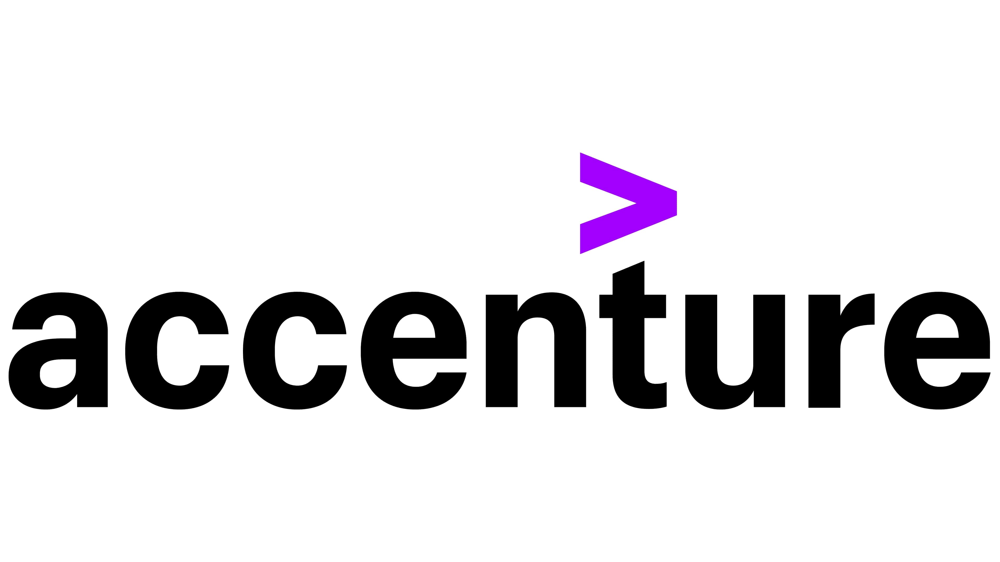

ADRIAN JOHN ONG DAVID
EDUCATION
Mapua University BS Computer Engineering | Graduation Year 2021
PROFESSIONAL EXPERIENCE

ACCENTURE INC.
Philippines — Application Developer (September 2021- April 2023)
Task and Responsibilities
- Design, build and configure applications to meet business process and application requirements
- Resolving incidents with direct coordination with dealers/clients undergo necessary cross training on applications supported by the project
- Provide product maintenance/fixes support for bugs as per project defined service level agreements
- Participate in team meetings like estimations, RCA/Post-Mortem and provide necessary information/details about issues discussed be able to provide process improvements that will improve efficiency in day-to-day tasks Create/Edit documentation user guide, user references, etc.
- Perform ASP Object Analysis and provide necessary comments for existing program objects in Dealer environments both Test and Production
TIMES PUBLISHING LIMITED
Singapore — System Analyst (May 2023-Present)
Task and Responsibilities
- Part of a team of passionate professionals working to provide an excellent IT environment for our businesses.
- To support AS400 software applications
- Work collaboratively with the cross-functional team to support new businesses
- Analyze business processes and make improvements to the supporting system
PROJECT EXPERIENCES
- Created new feature for Accenture Dealers
- Created new SQL Table, SQL View, with SQL Indexes
- Tested IO for existing programs using RPG Unit testing
- Created new Physical file (Fixed Format)
- Created new Display File (DSPF) for new record and window
- Created new RPG Program (RPGLE) to load and display Subfile
- Modified Existing programs for Bug Fixes & additional features like:
- Updating file info display
- Bypass screen record to able to proceed to the next one
- Logic correction – fixing sequences of programs
- Samanage Ticketing System Enhancements
- Create Query Database Files in IBM i5/OS AS/400 to send Daily, Weekly, Monthly, Yearly report.
- Handle Database files using work query DB2 SQL
- Create CL program to Run Query Database Files and send Report to User Email
SKILLS AND EXPERIENCES
- Application Developer Skills and experience:
- IBM System i (AS/400) RPG IV – ILE
- RPG Free
- CL
- SQL – table, view, index, STRSQL commands, etc.
- COBOL programming language
- Query i5/OS IBM
- ServiceNow – Updating client tickets
- Github
- HTML
- CSS
- Knowledgeable in the following software:
- iSeries IBM – Access Client Solutions
- Visual Studio Code